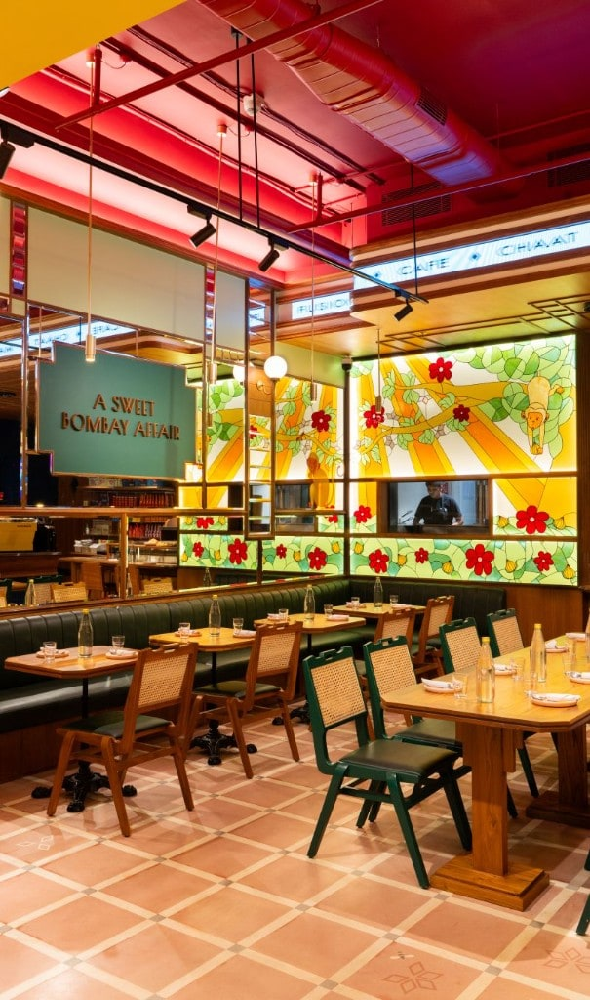
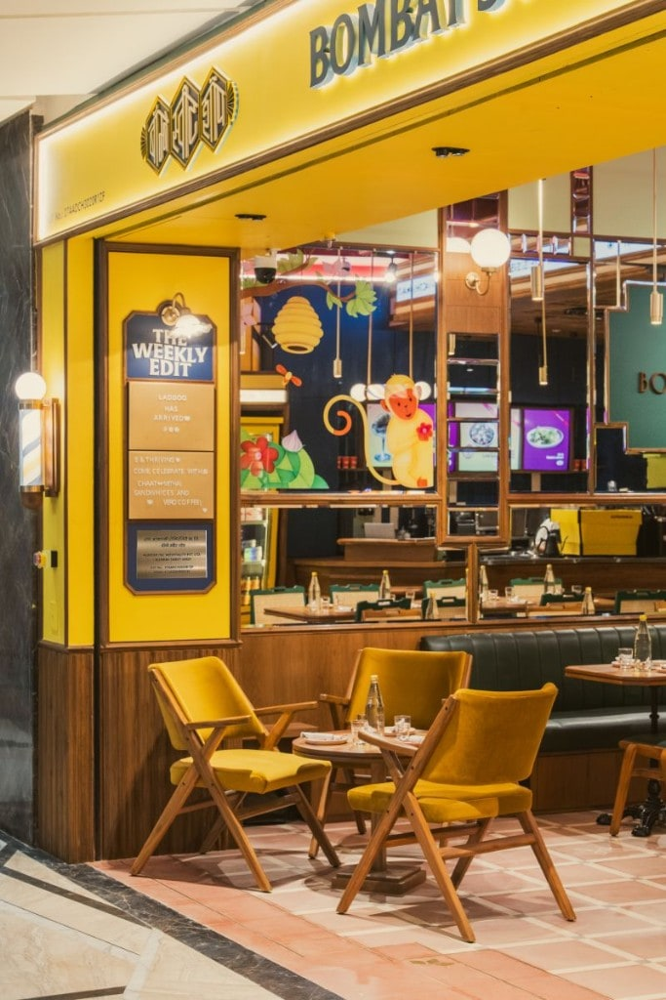
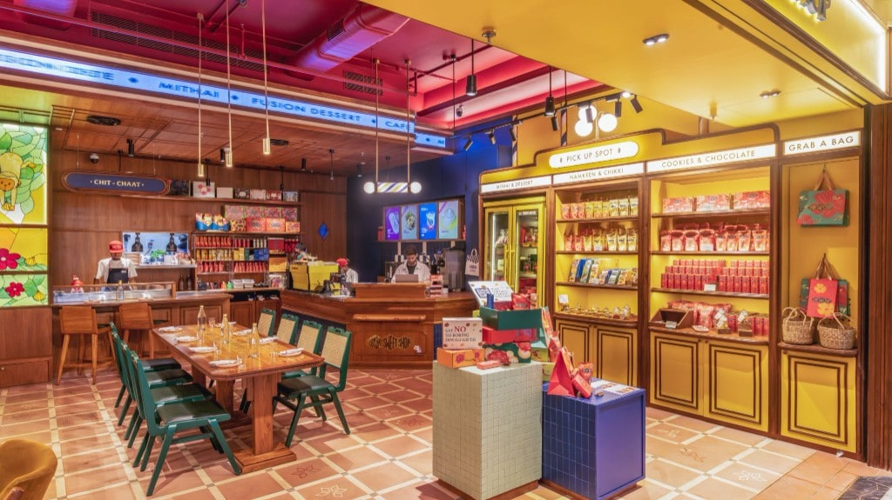
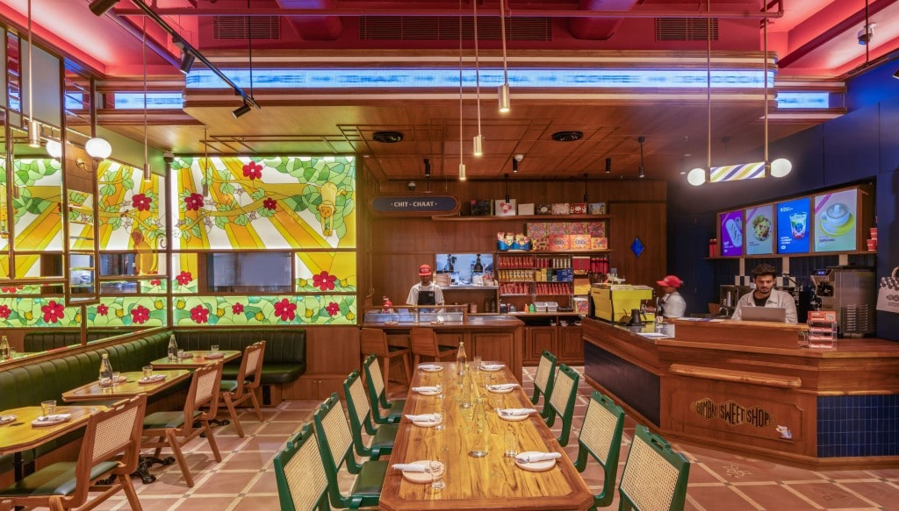
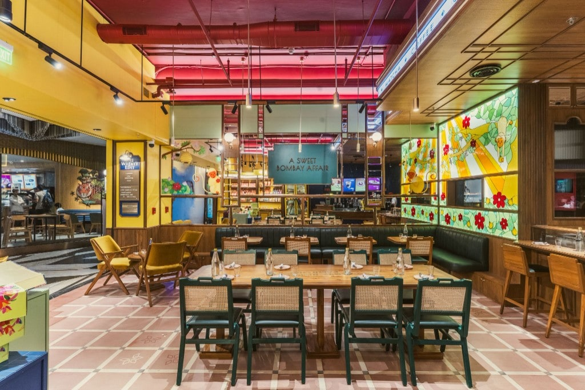

Interior design
Bombay Sweet Shop Palladium
During my time at Language.Architecture.Body (LAB), I worked on Bombay Sweet Shop, Palladium, Mumbai. The project deepened my understanding of commercial design, from tight timelines and close coordination with clients and management, to FOH & BOH planning and shaping vibrant, experience-driven spaces.




